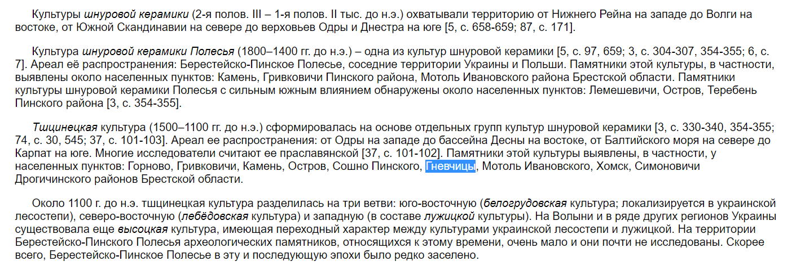
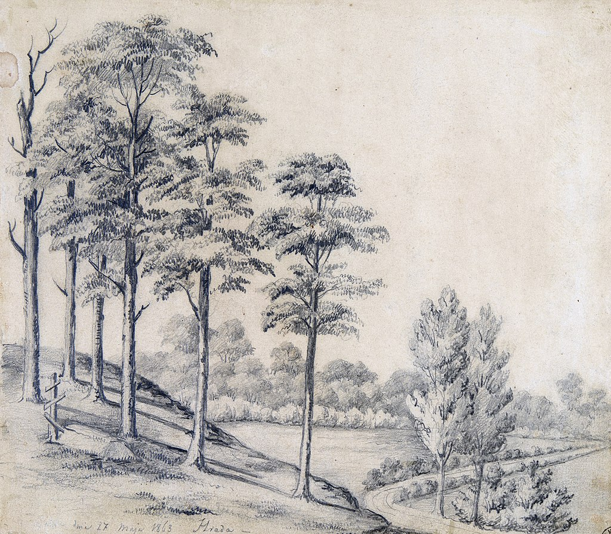
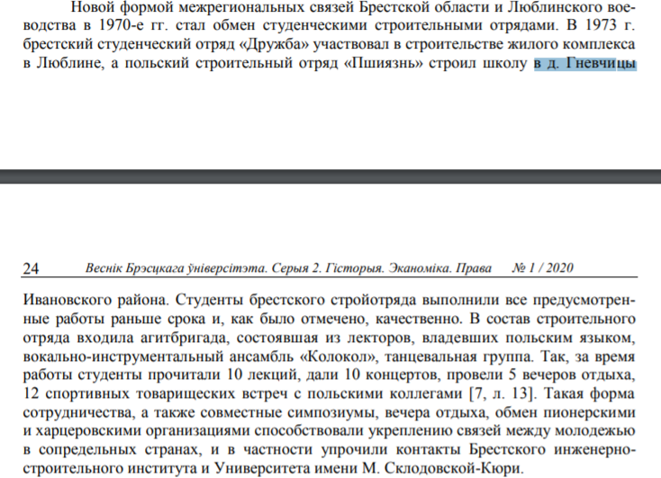
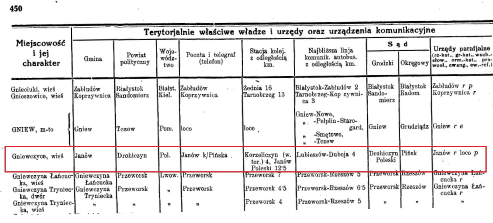
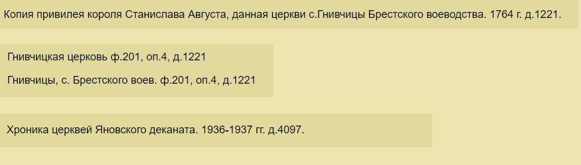

Гневчицы (также встречается написание Гнеўчыцы, Гніўчыцы, Гнивчицы, Gniewczyce, Hnyewchytsy, Hnieŭčycy) - деревня в Ивановском районе Брестской области.
Интересные факты:
-
Уже три или даже три с половиной тысячи лет (!) назад в районе Гневчиц жили люди.
Это подтверждают археологические раскопки

- В 1863 году Наполеон Орда нарисовал картину, которая называется "Поле бітвы Траўгута каля фальварку Града (паблізу вёскі Гнеўчыцы)". Картина хранится в Национальном музее в Кракове (Muzeum Narodowe w Krakowie. MNK III-r.a-4367). Также упоминается в книге Несцярчук Л. Напалеон Орда. Шлях да Бацькаўшчыны: кніга-альбом. — Менск: Мастацкая літаратура, 2009. С. 144. Правда я пока не нашла никакой информации о существовании фольварке Града в этом месте. Историк и культуролог Антон Астапович допускает, что Орда что-то напутал 😅
- Школу в д.Гневчицы строил студенческий отряд из Люблина, Польша.
В разное время Гневчицы входили в состав:
- 10-12 век - территория, где располагаются Гневчицы входила в состав Туровского княжества;
- 12-14 век - деревня Гневчицы находилась бы на территории Пинского княжества, которое выделилось из Туровского;
- 14 век - княжество вошло в состав Великого княжества Литовского;
- Речь Посполитая - (надо найти подробности);
-
Российская империя
1795 год - в результате 3-го раздела Речи Посполитой деревня Гневчицы вошла в состав Кобринского уезда Слонимской губернии (наместничества);
1797 год - Слонимская и Виленская губерния были объединены в Литовскую губернию;
1801 год - Литовская губерния снова разделена на Виленскую и Слонимскую;
28 августа 1802 года - Слонимская губерния переименована в Гродненскую;
1849 год - появилось дополнительное административное деление уездов: волость. Деревня Гневчицы вошла в состав Рагодощской(?) волости;
1866 год - Рагодощская волость была упразднена, и Гневчицы вошли в состав Одрижинской волости;
-
Вторая Речь Посполитая
1921 год - согласно Рижскому мирному договору земли Гродненской губернии переданы Польше. Кобринский уезд вместе с Пружанским и Брестским вошел в состав Полесское воеводство 2-ой Речи Посполитой. В частности Г. относились к гмине Янов Дрогичинского повета Полесского воеводства;
-
БССР
сентябрь - октябрь 1939 год - Полесское воеводство было насильственно присоединено красной армией к БССР;
4 декабря 1939 года - по новому административному делению деревня Гневчицы вошла в состав Ивановского района Пинской области и находилась там до 8 января 1954 года;
Упоминания в различных источниках
1921 год, "Перепись населения Республики Польша" 1

изображение 1
Пояснение к изображению 1:
По состоянию на 30 сентября 1921 года деревня Гневчицы входила в состав gmina Janów powiat Drohiczyn Poleskiego Województwa.
В деревне Гневчицы проживало 414 жителей: 199 мужчин и 215 женщин. Все 414 человек указали православие в качестве своего вероисповедания. В качестве национальности У 78 жителей была указана белорусская национальность. 336 людей назвали себя "тутейшими", т.е. местными.
1933 год, "Перепись учреждений власти, администрации и коммуникации" 2
изображение 2
Пояснение к изображению 2:
По состоянию на 1933 год деревня Гневчицы входила в состав gmina Janów powiat Drohiczyn Poleskiego Województwa.
Ближайшая почта и телеграф (телефон) находились в Янове (Иваново).
Ближайшие железнодорожные станции находились: в деревне Кужеличин (4км), Янов-Полесский (12.5км). Ближайшая автобусная линия Любешов-Дубое на расстоянии 4 км от деревни Гневчицы (видимо тоже в д.Кужеличин).
Ближайший городской суд находился в городе Дрогичин, ближайший окружной суд - в городе Пинске.
Ближайшая римско-католическая парафия находилась в городе Янов (Иваново), а ближайшая православная парафия находилась в самой деревне Гневчицы.
Церковь
- Самым ранним упоминанием церкви в Гневчицах можно считать книгу «Mironowicz A.: Biskupstwo turowsko-pińskie w XI‑XVI wieku. Trans Humana, 2011». Где в Туровско-пинском бискупстве описываются парафии в XI‑XVI в. там и упоминается парафия Гневчицкая.
-
После подписания в 1596 году Брестской унии
церковь стала греко-католической. Это подтверждают
сохранившиеся метрические униатские книги в РГИА за 1800-1801 гг.

-
В книге 1899 года
3
издания имеется информация, что церковь была деревянной, имела
деревянную колокольню и ограждение, носила
имя Николая Чудотворца
и была перестроена в 1820 году на средства помещика Иосифа Гутовского.
Приход состоит из 649 мужчин и 647 женщин, проживающих в деревнях Гневчицы, Морозы и Крытышын. Также при церкви работает церковная школа, где обучаются 30 мальчиков. При церкви служат священник и псаломщик.
Там же есть информация, что с 6 августа 1865 года и до момента написания книги (1897 г) священником является О. Николай Дружиловский.
Все нужные страницы книги можно посмотреть здесь
Метрические книги
-
В "Национальном историческом архиве Беларуси" в Минске сохранились
метрические книги за 1782‑1857 годы.
Шифр BY НИАБ ф. 1065:

взято отсюда
-
Основные ревизские сказки по Кобринскому уезду
Гродненской губергии хранятся в "Национальном историческом архиве Беларуси" в Гродно:

взято отсюда
-
В "Национальном историческом архиве Беларуси" в Гродно
сохранились следующие метрические книги:

взято отсюда
Памятник


фото сделано в 2020 году
В 1966 году в память о земляках, погибших во время Второй мировой войны, в центре деревни установлен обелиск воинской Славы.
Он представляет собой архитектурное сооружение из бетона в четыре уровня. Четвертый уровень в форме шпиля, сужающегося кверху, увенчан красной звездой, опаясанной венком из колосьев, имеет на своем протяжении конусообразную нишу-углубление. На третьем уровне располагается орден Великой Отечественной войны, а на втором укреплена светлая табличка с надписью "Вечная слава воинам Великой Отечественной войны 1941‑1945 гг". Первый уровень, самый объемный, содержит списки односельчан, погибших во время войны.
.jpg)
.jpeg)
Если есть желание помочь:
- Можно разобраться с административной принадлежностью Гневчиц в период Речи Посполитой;
- Можно найти фотографию церкви (В книге "Хрысціянскія храмы Беларусі на фотаздымках Яна Балзункевіча" информации про гневчицкую церковь нет);
- Можно найти книгу «Mironowicz A.: Biskupstwo turowsko-pińskie w XI‑XVI wieku. Trans Humana, 2011» и упоминание в ней Гневчицкой парафии;
- Можно перевести с польского языка опись фольварка, который существовал в Гневчицах в 1780 году;
-
Можно заказать в Центральном государственном историческом архиве Украины в г. Львове
оцифровку дела (номер дела на картинке ниже):

взято из "Архiў унiяцкiх мiтрапалiтаў. Т. 2"
Список использованной литературы
- Skorowidz miejscowości Rzeczypospolitej Polskiej : opracowany na podstawie wyników pierwszego powszechnego spisu ludności z dn. 30 września 1921 r. i innych źródeł urzędowych, Tom VIII. – Warszawa, 1924. – ? с., c. 15
- Skorowidz miejscowości Rzeczypospolitej Polskiej z oznaczeniem terytorjalnie im właściwych władz i urzędów oraz urządzeń komunikacyjnych / Tadeusz Bystrzycki (oprac.). – Przemyśl, Warszawa 1933?. – 2090 с., c. 450
- Описания церквей и приходов. Гродненский православно-церковный календарь / Епископ Иосиф - Воронеж, 1899. – 837 с., c. 50, 51, 400, 431, 442
- В 1863 году Наполеон Орда нарисовал картину, которая называется "Поле бітвы Траўгута каля фальварку Града (паблізу вёскі Гнеўчыцы)". Картина хранится в Национальном музее в Кракове (Muzeum Narodowe w Krakowie. MNK III-r.a-4367). Также упоминается в книге Несцярчук Л. Напалеон Орда. Шлях да Бацькаўшчыны: кніга-альбом. — Менск: Мастацкая літаратура, 2009. С. 144. Правда я пока не нашла никакой информации о существовании фольварке Града в этом месте. Историк и культуролог Антон Астапович допускает, что Орда что-то напутал 😅